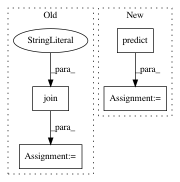

fbe9c6d0f43e46674315af432780a0e3961af05d,ludwig/train.py,,kfold_cross_validate,#Any#Any#Any#Any#Any#Any#Any#,403
Before Change
output_directory=os.path.join(temp_dir_name,"results"))
// collect training statistics for this fold
training_stats = load_json(os.path.join(temp_dir_name,"results","cross_validation_fold_"+str(i),
"training_statistics.json"))
kfold_training_stats["fold_"+str(i)] = training_stats
// save consolidated training statistics from k-fold cv runs
save_json(os.path.join(output_directory,"kfold_training_statistics.json"), kfold_training_stats)
After Change
output_directory=os.path.join(temp_dir_name,"results"))
// score on hold out fold
preds = model.predict(preprocessed_data[2],
model_definition["training"]["batch_size"])
// augment the training statistics with scoring metric fron the hold out fold
train_stats["fold_metric"] = preds["combined"]
In pattern: SUPERPATTERN
Frequency: 3
Non-data size: 4
Instances
Project Name: uber/ludwig
Commit Name: fbe9c6d0f43e46674315af432780a0e3961af05d
Time: 2019-12-29
Author: jimthompson5802@aol.com
File Name: ludwig/train.py
Class Name:
Method Name: kfold_cross_validate
Project Name: ageitgey/face_recognition
Commit Name: 39b587f1aef21060878707696d4e7251d72cd22b
Time: 2018-03-05
Author: ageitgey@gmail.com
File Name: examples/face_recognition_knn.py
Class Name:
Method Name:
Project Name: yzhao062/pyod
Commit Name: 87ce5a9cb09ea8ff0d7a90fdab2eeab0115d7c09
Time: 2018-06-04
Author: yuezhao@cs.toronto.edu
File Name: examples/feat_bagging_example.py
Class Name:
Method Name: